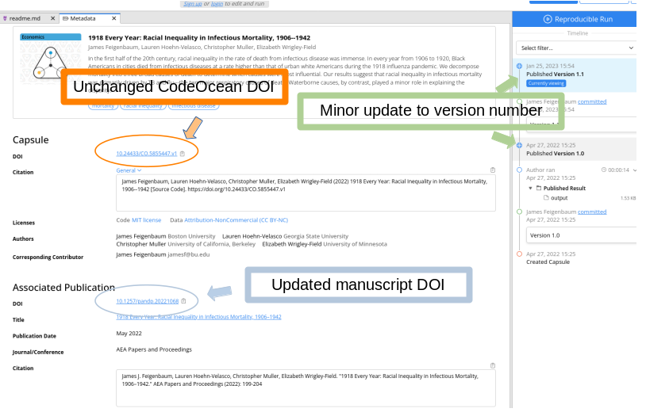
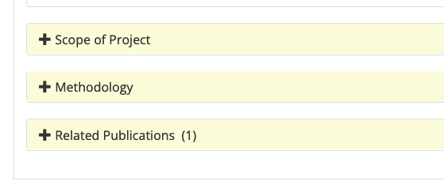
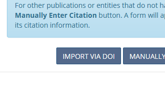
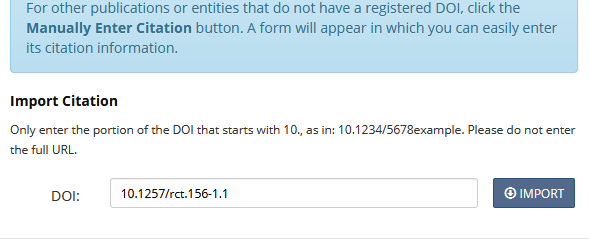
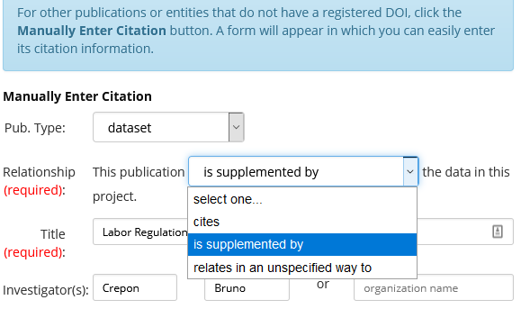

Display Guidelines for Trusted Repositories (other than AEA Data and Code Repository)#
The AEA accepts replication packages from any trusted repository (see list), as long as they meet certain display criteria, and otherwise satisfy the reproducibility criteria as per the AEA Data and Code Availability Policy. The default trusted repository is the AEA Data and Code Repository. If you have doubts about whether a particular repository qualifies as a “trusted” repository, contact the AEA Data Editor before unnecessarily duplicating the deposit.
If depositing at other trusted repositories, please follow these guidelines.
Why deposit at a different repository#
There are two main reasons why authors may want to deposit at a different repository:
They may have already created a deposit (for instance, when releasing a working paper). Deposits should remain where they are, reducing duplication and ambiguity (but see below for changes that may need to be made).
Some institutions or research labs habitually create deposits. Example: J-PAL’s Dataverse
The Zenodo-Github integration may have been used; see notes about Title, below.
Certain repositories may have additional features that are not available on the AEA’s repository at openICPSR.
As of 2022, openICPSR struggles with data deposits that have more than 1,000 files or more than 30GB of content.
Harvard Dataverse offers up to 1TB for free. An API is available.
Zenodo offers 50GB per default, but can easily be expanded to more than 200GB upon request. An API to download individual files is available.
Additional (generic) guidance#
Zenodo#
The AEA has a “community” on Zenodo: https://zenodo.org/communities/aeajournals
On Zenodo, you should use the “Submit for review” functionality if you do not already have a public deposit:
Only draft deposits can be submitted for review
Both the uploader (you) and the curator (the AEA Data Editor) can modify metadata and files
Zenodo Create new upload, but do NOT publish!
We strongly suggest not uploading a ZIP file, unless you need to preserve folder structure.
The README must be individually uploaded and selected as the file to display.
Zenodo Submit for Review
If you already have a published deposit, you can “Submit to community”.
Only published deposits can be submitted for inclusion in a community
Only metadata can be edited (any revision to files can only be handled by creating a new version)
Title#
The title should clearly distinguish paper and replication package.
The AEA requires “
Data and Code for: TITLE OF PAPER” when both data and code are part of the replication package, with variants for data-only, code-only, and additional data packages (”supplemental data”) that may be created to allow for different licensing (for instance, see this guide on creating a separate data deposit)Other repositories may offer to automatically prefix the paper title with “
Replication package for: TITLE OF PAPER”. That is acceptable, but not preferred, as it obfuscates what the deposit actually contains.Simply repeating the title of the paper is not acceptable.
Prefixing the title of the paper with “
Data for:” when the replication package actually contains code is not acceptable.Users of the Zenodo-Github integration may want to use the [CITATION.cff] file in their Github repository, see citation-file-format.github.io/, Github documentation, and the Citation File generator
README#
The README must conform to the template README for social science replication packages if the deposit is for a full replication package. If the deposit is for data-only, a simplified README is acceptable, but should
describe salient characteristics of the data,
the source of the data
license information
The README must be present in PDF format (other additional formats are acceptable).
If the platform allows, select the README as the default file to display.
Summary / Abstract#
The summary should be short, but informative. It can include the abstract of the article itself. It should not include information on the related article (which has its own field).
Additional fields / metadata#
Some repositories have the ability to provide related articles (most) or other related information.
Authors will need to return to these sites to update these fields with
the DOI of the published manuscript
the DOI of any related deposits
This ensures that the information is findable in both directions, not just from the article to the data and code.
NOTE: In any repository other than the AEA’s openICPSR repository, this action must be undertaken by the author, after the publication of the article. It cannot be done by AEA staff.
ZIP files#
if possible, expand all ZIP files, so that individual files can be downloaded.
under no circumstances should it be necessary to download a (possibly) very large ZIP file to read the README.
if ZIP files must be used, the visual display of the trusted repository should allow to inspect ZIP files
for instance, the filenames in a ZIP file can be viewed on Zenodo, but are not browsable on Dataverse or ICPSR.
when ZIP files cannot be inspected before downloading, the deposit must be amended to “expand” the ZIP file. Exceptions to this rule should be requested from the AEA Data Editor.
Contents#
The contents of the deposit must, of course, satisfy all other requirements for AEA replication packages.
Uploading and downloading large quantities of files#
Some repositories allow for the upload of files via API or import from online services. This may be useful for particularly large data deposits.
Zenodo: See documentation for the Zenodo legacy API. An example for a simple uploader in Python is on the AEA Github repository.
Zenodo: The legacy API can also be used to download individual files from Zenodo. The zenodo_get (Github source) Python package allows to download entire packages.
Zenodo: The legacy API is being deprecated. Once newer guidance and tools are available, we will update this page. For now, Zenodo points to InvenioRDM for API guidance (2023)
Dataverse: See documentation for Dataverse API. A R package
dataverse-client-rcan download individual files or complete packages. pyDataverse is Python code to interface with Dataverses.
Publishing, saving, and sharing#
Some repositories offer the ability to share the contents of the deposit prior to publishing it. Authors are encouraged to avail themselves of this opportunity.
Otherwise, authors must publish the repository, and communicate the DOI to the AEA Data Editor as part of the Data and Code Availability Form.
Zenodo: see link sharing or submit for review
Dataverse: See Private URL to Review Unpublished Dataset
After publication of the manuscript#
Once the AEA has published your manuscript, the manuscript DOI will be locked in place. At this time, there is one final small step that needs to be done: The author should adjust the “backlink” to the published manuscript (the link pointing from the deposit to the manuscript). While the AEA publication staff handle the “forward link” (from the manuscript to the replication package), and handle the backlink for any deposit in the AEA Data and Code Repository, they are unable to do so for any other trusted repository (including PSID and similar non-AEA repositories at ICPSR).
Here are some guidelines on how to do that update:
Adding manuscript DOI to CodeOcean capsule#
Authors will need to edit the metadata:
Log in to CodeOcean
Navigate to the “Metadata” tab.
You may have to click “Start editing” at the top of the middle window.
Add the DOI (it is usually recorded as “to be published”).
If all rules above were followed, no other changes are necessary.
Then “Submit for publication”
CodeOcean will then verify the deposit again. Normally, this should not generate a new version (V2), but rather, a V1.1. The DOI of the deposit should not change.

Adding manuscript DOI to other openICPSR repositories#
Authors will need to edit the metadata under the “Related Publications” heading:
Log in to openICPSR
Navigate to your deposits, and select the right one.
Do NOT create a new version!
Scroll down to the “Related publications” section.

In the modal, select “
Import via DOI”:

Enter the DOI as per instructions

From the relationship dropdown, select “
is supplemented by”:

Select
Save and Apply. The change will take effect immediately, there is no need to go through the publication process.
Special notes#
None at present.
Updating a Pre-Existing Deposit#
If your pre-existing deposit does not satisfy all of these rules, you can generally create a new version of the existing deposit. Such a new version is preferable to depositing at the AEA repository, but is your choice. In some cases, a new DOI is assigned (e.g., Zenodo or ICPSR), and you must communicate the DOI of the updated deposit to the AEA Data Editor in a timely fashion.
NOTE: Unless the chosen repository can be shared prior to publication (Dataverse), all such changes are public and visible to others.
Examples#
Zenodo#
Good examples can be found in the AEA Journal Community, for instance:
U.S. Geological Survey, & Brooks, Leah. (2022). USGS National Map 3DEP 1 Arc-second Digital Elevation Models (DEMs): Full Coverage for U.S. Interstate Highway System [Data set]. Zenodo. https://doi.org/10.5281/zenodo.5830968 (83GB)
Ministerio de Desarrollo Productivo Argentina, Daruich, Diego, Kozlowski, Julian, & Vilhuber, Lars. (2022). Precios Claros (2016-05 - 2018-03) [Data set]. In American Economic Journal: Macroeconomics. Zenodo. https://doi.org/10.5281/zenodo.6568295 (44GB, about 1,200 files)
Note#
These rules may be amended from time to time.